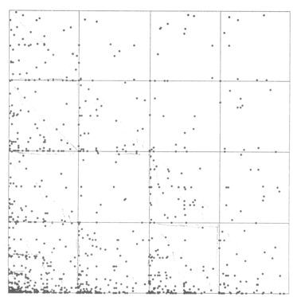

| Schneider's second experiment involved the duration of the shots. |
| bin | duration | purpose |
| 1 | 1-4 seconds | rapid action |
| 2 | 5-8 seconds | informationon how the environment has changed after a
fast sequence |
| 3 | 9-30 seconds | plot development |
| 4 | > 30 seconds | major plot points |
|
| Here is the IFS driven by duration of shots. |
|  |
| Schneider made these interpretations. |
| * As with the IFS driven by shot distances, we see a faint gasket, and again it is caused by a relatively
small number of 4s (long takes are rare), only about 4.3% of all points. |
| * Further, the
square 14 is less populated than 11, 12, and 13. |
| Is this a consequence of the smaller
number of 4s, or of the unlikeliness of the 41 combination? |
| * The percentage of points of
square 1 in subsquare 14 is about the same as the percentage of all points in square 4,
so there appears to be no evidence that 41 is an unlikely combination. |
| In general, Schneider observed that fewer empty squares suggests there little relation
between previous takes and the current take. Why this should be true is unclear. |